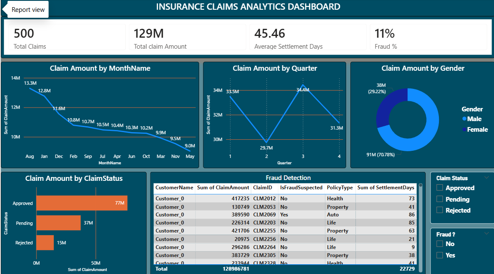

Insurance Claims Analytics Dashboard
Problem: Claims audit decisions relied on manual, retrospective review with no unified view of FWA risk across hospitals and specialties.
Approach: Built a Power BI dashboard consolidating cashless & reimbursement claims data into visual FWA signal panels, frequency and severity trend views, and regional risk heatmaps.
Impact: Faster identification of anomalous billing and utilization patterns, supporting more consistent CRC audit decisions.
Power BI
FWA Signals
Risk Analytics